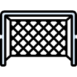

Название
ФУТБОЛ | (англ. football от foot «ступня» + ball «мяч») — командный вид спорта, в котором целью является забить мяч в ворота соперника ногами или другими частями тела (кроме рук) большее количество раз, чем команда соперника. В настоящее время самый популярный и массовый вид спорта в мире.Игрок, играющий в эту игру, — футболи́ст.
Ранние разновидности футбола
В игры с мячом играли во многих странах. В Китае такая разновидность называлась Чжу-Кэ. В древней Спарте игра называлась «Эпискирос», а в Древнем Риме «Харпастум». Примерно в XIV веке итальянцы изобрели игру «Кальчо». Именно они завезли эту игру на Британские острова.
Первые правила
В XIX веке футбол в Англии приобрёл популярность, сравнимую с крикетом. В него играли в основном в колледжах. В некоторых колледжах правила разрешали ведение и передачу мяча руками, в других это, напротив, запрещалось[16]. Первая попытка создать единые правила была предпринята в 1846 году, когда встретились представители нескольких колледжей. Они установили первый свод правил. В 1857 году был основан первый специализированный футбольный клуб — «Шеффилд». В 1863 году после долгих переговоров был принят свод правил Футбольной Ассоциации Англии. Также были приняты размеры поля и ворот. А в 1871 году был основан Кубок Англии — старейший футбольный турнир в мире. В 1891 году было принято правило о пенальти. Но сначала пенальти билось не с точки, а с линии, которая так же, как и сейчас, находилась на расстоянии 11 метров от ворот.
Инвентарь:
МЯЧ | Футбольный мяч должен быть сферической формы,
используемый
для игры в
футбол, параметры которого регламентируются Правилом 2 Правил игры в футбол.Мяч состоит из 3 частей:
покрышки, подкладки и камеры:
- Покрышка — верхняя оболочка мяча, по которой наносятся удары.
- Подкладка — средняя оболочка мяча, от толщины которой зависит прочность мяча (чем толще, тем прочнее).
- Камера — центральная оболочка мяча, в которую закачивается воздух для более удобного нанесения ударов.
ПОЛЕ | Матчи могут проводиться как на полях с
естественным,
так и на полях с искусственным
покрытием. Согласно официальным правилам игры в футбол искусственное покрытие должно быть зелёного цвета.
Поле для игры имеет форму прямоугольника. Боковая линия обязательно должна быть длиннее линии ворот.
Принималось решение о том, что размер поля должен составлять 100—110 м (110—120 ярдов) в длину и минимум
64—75 м (70—80 ярдов) в ширину, однако затем обязательность этого требования была приостановлена.

Ворота | Ворота, используемые при игре в футбол, состоят из
двух вертикальных стоек (штанги),
находящихся на равном расстоянии от угловых флагштоков (то есть ворота должны размещаться по центру линии
ворот), соединённых вверху горизонтальной перекладиной.
Разметка |
Разметка поля делается линиями шириной не более 12 см (5 дюймов); эти линии входят в площади, которые они
ограничивают. Все линии должны быть одинаковой ширины.
Название линий поля:
- Две длинные линии, ограничивающие поле для игры, называются боковыми линиями; две короткие линии — лицевыми линиями или линиями ворот, так как на них располагаются ворота.
- Средняя линия: Поле делится на две половины с помощью средней линии, соединяющей середины боковых линий. Посередине средней линии делается отметка центра поля — сплошной круг диаметром 0,3 м (1 фут). Вокруг центра поля проводится окружность радиусом 9,15 м (10 ярдов). С отметки центра поля в начале каждого из таймов основного и дополнительного времени, а также после каждого забитого гола, выполняется начальный удар. При исполнении начального удара все игроки должны находиться на своих половинах поля, а соперники выполняющей удар команды — и за пределами центрального круга.
- Штрафная площадь: на каждой половине поля размечается штрафная площадь — зона, в которой вратарь может играть руками, а в ворота команды, совершившей в своей штрафной площади нарушение, наказуемое штрафным ударом, будет назначен 11-метровый удар. Размеры штрафной площади — 40,32 м (44 ярда) на 16,5 м (18 ярдов). В пределах штрафной площади, по центру линии ворот и на расстоянии 11 м (12 ярдов) от неё, наносится одиннадцатиметровая отметка — сплошной круг диаметром 0,3 м (1 фут). За пределами штрафной площади проводится дуга окружности радиусом 9,15 м (10 ярдов), центр которой находится на одиннадцатиметровой отметке; данная дуга используется для расположения игроков команд при пробитии одиннадцатиметрового удара.
- Площадь ворот: на каждой половине поля размечается площадь ворот — зона, из пределов которой выполняется удар от ворот; размеры площади ворот — 18,32 м (20 ярдов) на 5,5 м (6 ярдов).
- Угловые сектора: в каждом из четырёх углов поля проводится дуга радиусом 1 м (или 1 ярд) с центром в углу поля, ограничивающая сектор для исполнения угловых ударов. Также у каждого угла поля обязательно ставятся флаги на флагштоках, не имеющих сверху заострений.
Форма | Согласно Правилам, обязательными элементами экипировки являются: рубашка (или
футболка)
имеющая рукава, трусы, гетры, щитки и бутсы.
Команда
Футбольная команда состоит из 11 человек (см. Число игроков (футбол)) и состоит из:
- Вратарь
- Защитник
- Полузащитник
- Нападающий
- Капитан
- Стартовый состав
- Запасной игрок
- Футбольный тренер